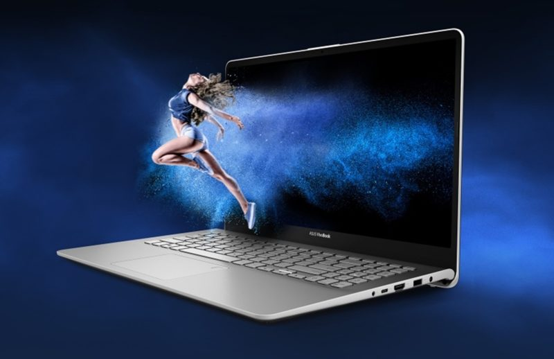
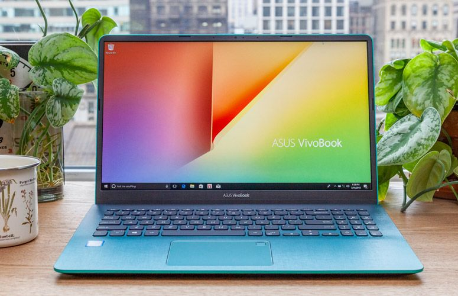

.jpg)
.jpg)
in search of incredible
ASUS is a Taiwan-based, multinational computer hardware and consumer electronics company that was established in 1989. Dedicated to creating products for today’s and tomorrow’s smart life, ASUS is the world’s No. 1 motherboard and gaming brand as well as a top-three consumer notebook vendor. ASUS became widely known in North America when it revolutionized the PC industry in 2007 with its Eee PC™. Today, the company is pioneering new mobile trends with the ASUS ZenFone™ series, and it is rapidly developing virtual and augmented reality products as well as IOT devices and robotics technologies. Most recently, ASUS introduced Zenbo, a smart home robot designed to provide assistance, entertainment, and companionship to families. In 2015 and 2016, Fortune magazine recognized ASUS as one of the World’s Most Admired Companies, and for the past four years Interbrand has ranked ASUS Taiwan’s most valuable international brand. The company has more than 17,000 employees, including a world-class R&D team. Driven by innovation and committed to quality, ASUS won 4,385 awards and earned approximately US$13.3 billion in revenue in 2016.
29
years of tech legacy4511
awards in 20174+
rated phones200+
service centersAsus VivoBook 14 S406UA-BM165T is a Windows 10 Home laptop with a 14.00-inch display that has a resolution of 1920x1080 pixels. It is powered by a Core i5 processor and it comes with 8GB of RAM. The Asus VivoBook 14 S406UA-BM165T packs 256GB of SSD storage. Graphics are powered by Intel HD Graphics. Connectivity options include Wi-Fi 802.11 ac, Bluetooth and it comes with 4 USB ports (2 x USB 2.0, 1 x USB 3.0), Multi Card Slot, Mic In ports. As of 2nd November 2020, Asus VivoBook 14 S406UA-BM165T price in India starts at Rs. 52,499.One of its shortcomings is the slightly dull display, which isn't the best for watching videos, so it's not ideal for multimedia use. Battery life, while decent for the capacity, could have been better, and we would have preferred a full-sized SD card slot instead of a microSD one. If you're looking for better gaming performance, then you can get the X412FJ-EK177T model with an Nvidia GeForce MX230 GPU for Rs. 59,990. Asus also has a VivoBook 15 series, with very similar configurations as the 14 series, all priced under Rs. 60,000, in case you want a larger display. Overall, the Asus VivoBook 14 ranks high on our recommendation list if you're looking for a compact Ultrabook with fast and ample storage at a reasonable price.
ASUS VivoBook S14 ( Core i5- 8th Gen/8 GB/ 256GB SSD / 14.0" FHD/ Windows 10 ) S406UA-BM165TThere's nothing particularly great about the VivoBook 14's build and design. The laptop is as interesting to look at as an empty glass of masala tea. On the outside, the VivoBook 14 uses only matte plastic for its top cover and base panel and that shows through when you tap the surface of the laptop with your knuckles. Still, it feels a lot more solid than the VivoBook S14 (S406UA). Gripping the lid firmly while opening it reveals signs of flex across the entire width of the display, which is a disappointing eyesore. On the plus side, not too much flex is observed on the keyboard island even when the keys are tapped hard. Opening the display reveals a 14-inch LCD screen with a matte finish and fairly slim bezels all around (5.7mm on the sides, 8.8mm at the top, and 11.4mm at the bottom). Asus claims the laptop manages an 87-percent screen-to-body ratio. The colour of the keyboard area and keys matches that of the laptop's lid. On the review unit, it was plain silver. In fact, only the screen's bezels are in matte black; everything else is monotone. The use of sharply coloured accents or shades on the inside and outside would have benefited the laptop's overall appearance greatly. The area around the keyboard gets a dotted finish, giving the laptop an iota of character. The VivoBook 14 is otherwise quite boring to look at.
The Asus VivoBook 14 has, as you can imagine, a 14-inch LCD panel, which has a Full HD resolution and a 178-degree claimed horizontal maximum viewing angle. The colours on the display look mostly washed out and whitish whether you're browsing on the web, watching a video, or playing a game. Going by our test kit, the display is capable of reproducing 59 percent of the colours in the sRGB colour space and 43 percent of the colours in the Adobe RGB colour space. The VivoBook loses many points for not being able to produce over 90 percent of the colours in either colour space, which is something any average laptop should. In comparison, the VivoBook S14's display manages 93 percent sRGB and 72 percent Adobe RGB colours. At 199 LUX, max brightness is sufficient for indoor and outdoor use. The screen’s matte finish helps reduce glare too. Sound from the two down-firing SonicMaster speakers on the VivoBook 14 is underwhelming at best. Songs like Starboy by The Weeknd and Here Comes the Hotstepper by Ini Kamoze sound blunt and flat at max volume. While mids and highs sound fairly accurate, lows don’t make it to the ears at all. The speakers are also not too loud. While they’re loud enough for music and video calls in a quiet office cubicle, they’re no good for open spaces with noisy colleagues. You’re better off getting yourself a good pair of headphones or a portable Bluetooth speaker along with this 14-incher.
The VivoBook 14's keyboard is one of the laptop’s most finely engineered components with a couple of unflattering qualities. But we’ll get to that in a moment; let's talk about what’s good first. With a profile of 1.3 millimetres, the keys have just the right amount of travel and resistance. The keycaps are well spaced and well sized. Typing, for the most part, is an absolute treat on the VivoBook 14. On the review unit, I found myself making very few mistakes or mistypes while writing my reviews and articles. When tapped on, the keys on the VivoBook 14’s keyboard land with a definite thud that feels reassuring and final. What helps the typing experience is Asus’ ErgoLift hinge technology, which gives the keyboard a 2-degree tilt. This laptop is highly recommended for users who do a lot of typing day in, day out.The keyboard design on the VivoBook 14 is nearly perfect barring two significant flaws. There are no dedicated keys for Page Up, Page Down, Home, and End functions on the keyboard, which means users who type a lot will be forced to rely on key combinations for those functions. It’s a mild productivity-killer for writers like me. The Delete key is placed adjacent to the power button, which could lead to unintended sleeps and hibernate. The review unit came in the Transparent Silver colour option, whose keyboard had white keycaps with transparent letters and characters. The colour of the keyboard backlight too was—you guessed it—bright white. So, when the backlight was disabled, the keys were easily identifiable. However, when the white backlight shone through the transparent characters on the white keycaps, they all looked like one big blob of white light. The chances are that you won’t face this problem if you buy the VivoBook 14 in any other colour
The unit we received for review was powered by an Intel Core i5-8265U (clocked at 1.60GHz), 8GB of RAM, and an NVIDIA GeForce MX230 graphics card with 2GB of dedicated GDDR5 video RAM. Storage was handled by an Intel 660P Series PCIe NVMe solid-state drive with a capacity of 512GB. According to the review guide supplied by Asus, some variants of the VivoBook 14 will feature a 1TB hard drive spinning at 5,400 rpm instead of the solid-state drive. In comparison, the Lenovo IdeaPad 530S shares the same CPU, SSD and RAM capacity but has the older NVIDIA GeForce MX150 graphics card with 2GB of dedicated video RAM
The VivoBook 14 ships with a dual-cell 37Whr lithium-ion polymer battery. On our standard battery benchmark test, the review unit scored an abysmally low 2 hours, 25 minutes. In comparison, the Lenovo IdeaPad 530S lasted only 22 minutes longer on the same test. In everyday use scenarios, the VivoBook 14 review unit did pretty well. With Wi-Fi and Bluetooth enabled, the screen set to 70 percent brightness, the laptop’s battery charge halved in two and a half hours. During that time, I ran multiple instances of Chrome, worked with locally stored files, and played music for about twenty minutes at max volume through the speakers. Charging from 11 percent to 100 took nearly two and a half hours. Despite its pitiably low benchmark test score, the VivoBook 14 lasts somewhere between four and five hours on a single charge, which is decent but nothing to write home abou
The Asus VivoBook 14 is an ideal candidate if you’re looking for a lightweight mainstream laptop that can help you with everyday computing tasks, including writing, web browsing, number crunching, and light image editing. It can even take on a few popular game titles if it’s not asked to run them at the highest graphics setting available. What’s more, its comfortable keyboard and touchpad combo add to the overall pleasant computing experience